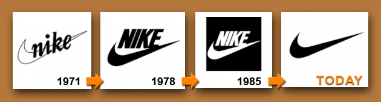
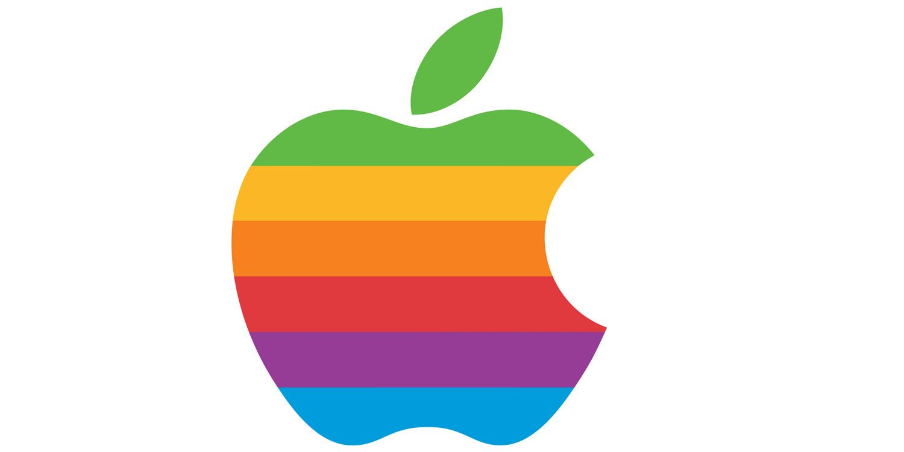
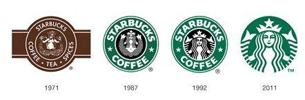
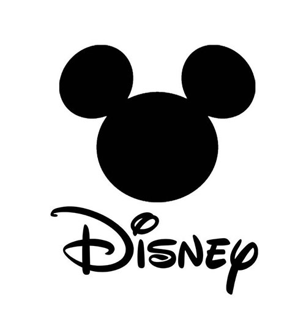

class: middle # Logos, and Wordmarks, and Combination Marks <hr> Matthew J. Lavin Clinical Assistant Professor of English and Director of Digital Media Lab University of Pittsburgh Spring 2020 --- class: middle --- class: middle --- class: middle <img class="youtube" style="background-color:white" src="images/mlcstock.jpg"/> --- class: middle  --- class: middle  --- class: middle --- class: middle --- class: middle  --- class: middle <img class="youtube" style="background-color:white" src="images/bmw-logo.png"/> --- class: middle <img class="youtube" style="background-color:white" src="images/disney-1.png"/> --- class: middle  --- class: middle --- class: middle --- class: middle